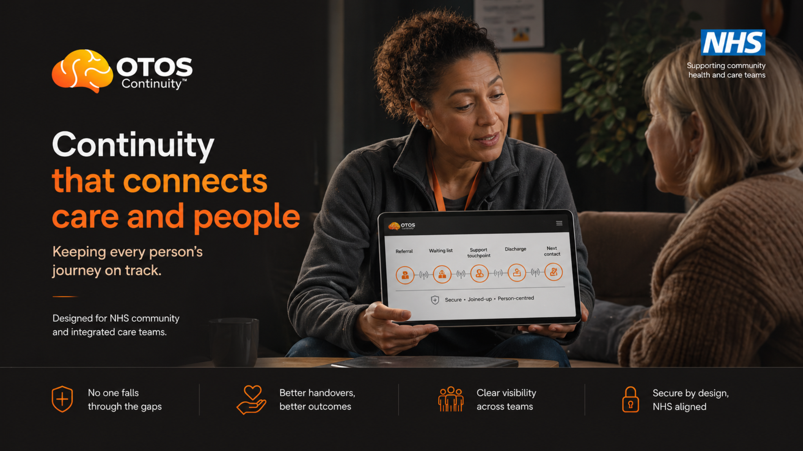

Change Grow Live & Cambridgeshire Recovery Service
CGL and CRS see the repeat cycle. OTOS holds the thread between intake, recovery and aftercare.
People arrive in crisis, stabilise, move between support and can still disappear between contacts. Continuity™ makes that holding visible, receipted and safer — without adding a new case-management layer.
Draft note — CGL / Cambridgeshire Recovery Service
I've been briefed on OTOS Continuity™ — a non-clinical continuity layer for adults where ADHD, addiction and service drift overlap. CGL has already shown leadership in recognising ADHD within substance-use pathways; OTOS appears to complement that work by protecting continuity between services rather than duplicating assessment or clinical decision-making. I would be willing to explore a bounded 12-week pre-pilot scoping conversation.
Edit as you see fit. Two minutes to send. No commitment beyond the note.
Low integration. Low disruption. High clarity. No diagnosis, no prescribing, no clinical record access, no automated decisions, no change to recovery workflows.
Seven things that get easier. Nothing that gets harder.
OTOS wraps around what CGL and CRS already do — including the transition from CGL frontline support into CRS community recovery. Nothing changes in how you work. Here is what changes for the people you're trying to help.
01 — No more chasing
Your client stays connected between appointments
Micro check-ins happen automatically — a daily data point that keeps the thread alive without a single extra call from your desk. If they go quiet, you know before it becomes a crisis.
02 — Every referral receipted
You know it landed
Every referral you make has a receipt. You know whether it landed, stalled or was acknowledged. No more wondering what happened after you sent them somewhere.
03 — Drift signals
You're told who needs attention
The system surfaces who is going quiet — before they disappear completely. Less reactive chasing. More proactive, timely re-engagement at the right moment.
04 — Suspected ADHD
Now the next step can stay visible
CGL has already shown that ADHD belongs inside the substance-use conversation. OTOS helps protect the route around that insight — without asking keyworkers to diagnose, prescribe or carry clinical responsibility.
05 — Whole journey visible
No more starting from scratch
The person's journey is visible across CGL, CPFT, RCE, GP — in one receipted thread. When they come back through your door, you can see exactly where the gap was.
06 — The CGL to CRS transition held
Growing in the community — with a visible thread
After six months at CGL, people move to CRS to grow in the community. That transition is a critical handoff moment. OTOS makes it visible, receipted and tracked — so nobody falls through the gap between frontline support and community recovery. CRS can log touchpoints in the community, keeping the thread alive between formal contacts.
07 — Stays engaged between sessions
Bridge to RCE and CGL support groups
Between appointments, OTOS points people toward RCE wellbeing courses and CGL support groups automatically. They stay connected to recovery support. You stay informed without extra effort.
CGL has already recognised the ADHD + addiction gap
CGL has already moved first. OTOS adds the continuity around it.
CGL has already shown, publicly, that ADHD belongs inside the substance-use conversation. In Nottinghamshire, CGL's Psychology Team developed a specialist ADHD diagnostic assessment pathway for adult substance-misuse service users within the Criminal Justice System.
That matters because this is not a cold idea being pushed at addiction services from the outside. CGL has already engaged with the ADHD question. OTOS is not asking CGL or CRS to become an ADHD diagnostic service, train keyworkers to diagnose, prescribe, or hold clinical responsibility.
It solves the next problem: what happens between addiction support, mental-health referral, assessment routes and community recovery, when agreed next steps are easy to lose between services.
Inline visual

How community continuity sits around CGL and CRS work.Used in the body copy where it explains the route, with click-to-expand for legibility.Hover / click to enlarge
"The ask is not to diagnose more people. The ask is to protect the space around the work CGL and CRS already understand."
Why this should be an easy scoping conversation
CGL has already recognised ADHD as relevant inside substance-use pathways
OTOS does not duplicate assessment, diagnosis or prescribing
The pilot tests continuity around the pathway, not a new clinical role for keyworkers
What changes for CGL and CRS
For CGL: the value of recovery holding becomes visible, not assumed.
For CRS: community touchpoints can keep the thread alive between formal contacts.
For the person: the next step is less likely to disappear when motivation, memory or executive function drops.
Source note
CGL Nottinghamshire's Criminal Justice ADHD Assessment Pathway was described publicly in an NHS Jobs advert for an Assistant Psychologist post supporting the pathway.
What OTOS needs from CGL / CRS
Three things. None of them clinical.
Named contact
One person at CGL/CRS
A named contact to answer workflow questions, confirm local boundaries and help shape the continuity protocol for the CGL/CRS intake pathway.
Entry point visibility
Intake as a thread start
When someone presenting with ADHD-relevant risk enters CGL/CRS, the thread starts there. Not a clinical decision — just a logged, visible handoff point.
Scoping conversation
Thirty minutes together
Map the pathway, agree the boundaries, design the safest route in. No commitment required beyond that conversation.
What OTOS will never do
✕Access or interface with Caspian or any case management system
✕Create clinical records or share identifiable information
✕Add keyworker workload beyond the initial scoping call
✕Make clinical decisions or automate care decisions
✕Replace any existing CGL/CRS safeguarding or crisis protocol
Questions to resolve together
?What is the right point of identification within the CGL/CRS intake?
?Who is the named contact — and what is their capacity?
?What governance or information-sharing agreement is needed?
?How does OTOS interact with CRS's community recovery model?
"We are not asking the system to change. Only to connect."
Ready when you are.
One note. One conversation. That is all it takes to start.